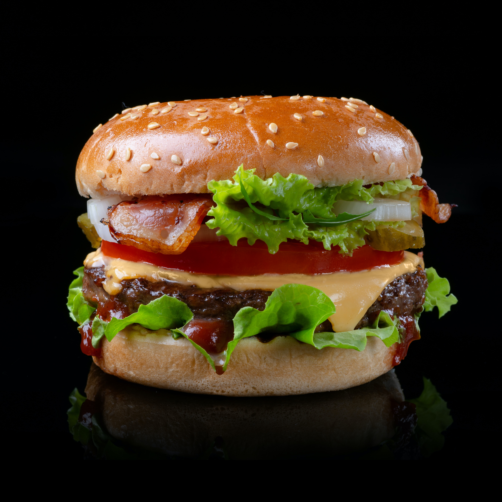

Burger

Description:
a savory sandwich consisting of a grilled or fried patty made from ground meat, typically beef, placed between two halves of a bun and often garnished with various toppings and condiments.
Ingredients:
- Ground beef patty
- Hamburger bun
- Lettuce
- Tomato slices
- Onion slices
- Pickles
- Cheese
- Ketchup
- Mustard
- Mayonnaise
- Salt
- Pepper
Steps:
- Preheat your grill or stovetop pan to medium-high heat.
- Divide the ground beef into equal portions and shape them into patties, ensuring they're slightly larger than the bun diameter to account for shrinkage during cooking.
- Season both sides of each patty generously with salt and pepper.
- Place the patties onto the preheated grill or pan, and cook them for about 4-5 minutes on one side without pressing down.
- Flip the patties and cook for an additional 4-5 minutes on the other side, allowing them to develop a flavorful crust.
- If desired, add a slice of cheese to each patty during the last minute of cooking, allowing it to melt.
- While the patties cook, lightly toast the hamburger buns on the grill or in a separate pan.
- Once the patties are cooked to your desired doneness (medium-rare, medium, etc.), remove them from the heat and let them rest for a few minutes.
- Assemble your burger by placing a patty on the bottom half of the toasted bun.
- Add lettuce, tomato slices, onion slices, pickles, and any other desired toppings.
- Spread ketchup, mustard, and mayonnaise on the top half of the bun.
- Place the top bun over the assembled ingredients.
- Serve your juicy burger immediately and enjoy!